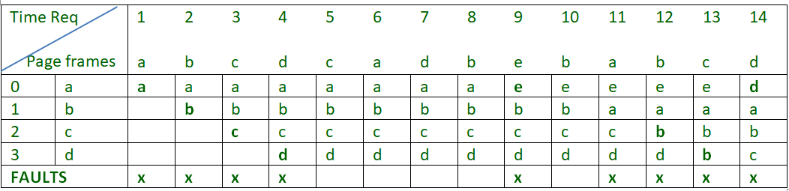
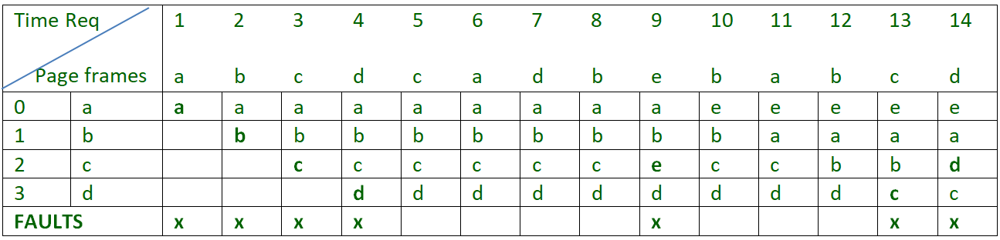

In a operating systems that use paging for memory management, page replacement algorithm are needed to decide which page needed to be replaced when new page comes in. Whenever a new page is referred and not present in memory, page fault occurs and Operating System replaces one of the existing pages with newly needed page. Different page replacement algorithms suggest different ways to decide which page to replace. The target for all algorithms is to reduce number of page faults.
Page Fault – A page fault is a type of interrupt, raised by the hardware when a running program accesses a memory page that is mapped into the virtual address space, but not loaded in physical memory.
Page Replacement Algorithms :
- First In First Out (FIFO) –
This is the simplest page replacement algorithm. In this algorithm, operating system keeps track of all pages in the memory in a queue, oldest page is in the front of the queue. When a page needs to be replaced page in the front of the queue is selected for removal.For example-1, consider page reference string 1, 3, 0, 3, 5, 6 and 3 page slots.
Initially all slots are empty, so when 1, 3, 0 came they are allocated to the empty slots —> 3 Page Faults.
when 3 comes, it is already in memory so —> 0 Page Faults.
Then 5 comes, it is not available in memory so it replaces the oldest page slot i.e 1. —>1 Page Fault.
Finally 6 comes, it is also not available in memory so it replaces the oldest page slot i.e 3 —>1 Page Fault.Example-2, Let’s have a reference string: a, b, c, d, c, a, d, b, e, b, a, b, c, d and the size of the frame be 4.

There are 9 page faults using FIFO algorithm.Belady’s anomaly – Belady’s anomaly proves that it is possible to have more page faults when increasing the number of page frames while using the First in First Out (FIFO) page replacement algorithm. For example, if we consider reference string 3, 2, 1, 0, 3, 2, 4, 3, 2, 1, 0, 4 and 3 slots, we get 9 total page faults, but if we increase slots to 4, we get 10 page faults.
- Optimal Page replacement –
In this algorithm, pages are replaced which are not used for the longest duration of time in the future.Let us consider page reference string 7 0 1 2 0 3 0 4 2 3 0 3 2 and 4 page slots.
Initially all slots are empty, so when 7 0 1 2 are allocated to the empty slots —> 4 Page faults
0 is already there so —> 0 Page fault.
when 3 came it will take the place of 7 because it is not used for the longest duration of time in the future.—>1 Page fault.
0 is already there so —> 0 Page fault..
4 will takes place of 1 —> 1 Page Fault.
Now for the further page reference string —> 0 Page fault because they are already available in the memory.Example-2, Let’s have a reference string: a, b, c, d, c, a, d, b, e, b, a, b, c, d and the size of the frame be 4.

There are 6 page faults using optimal algorithm.Optimal page replacement is perfect, but not possible in practice as operating system cannot know future requests. The use of Optimal Page replacement is to set up a benchmark so that other replacement algorithms can be analyzed against it.
- Least Recently Used –
In this algorithm page will be replaced which is least recently used.Let say the page reference string 7 0 1 2 0 3 0 4 2 3 0 3 2 . Initially we have 4 page slots empty.
Initially all slots are empty, so when 7 0 1 2 are allocated to the empty slots —> 4 Page faults
0 is already their so —> 0 Page fault.
when 3 came it will take the place of 7 because it is least recently used —>1 Page fault
0 is already in memory so —> 0 Page fault.
4 will takes place of 1 —> 1 Page Fault
Now for the further page reference string —> 0 Page fault because they are already available in the memory.Example-2, Let’s have a reference string: a, b, c, d, c, a, d, b, e, b, a, b, c, d and the size of the frame be 4.

There are 7 page faults using LRU algorithm.
GATE CS Corner Questions
Practicing the following questions will help you test your knowledge. All questions have been asked in GATE in previous years or in GATE Mock Tests. It is highly recommended that you practice them.
- Memory Management | Question 1
- Memory Management | Question 10
- GATE CS 2014 (Set-1), Question 65
- GATE CS 2012, Question 40
- GATE CS 2007, Question 56
- GATE CS 2007, Question 82
- GATE CS 2007, Question 83
- GATE CS 2014 (Set-3), Question 65
- GATE CS 2002 Question 23
- GATE CS 2001, Question 21
- GATE CS 2010, Question 24
Reference –
Bélády’s anomaly
This article has been improved by RajshreeSrivastava. Please write comments if you find anything incorrect, or you want to share more information about the topic discussed above